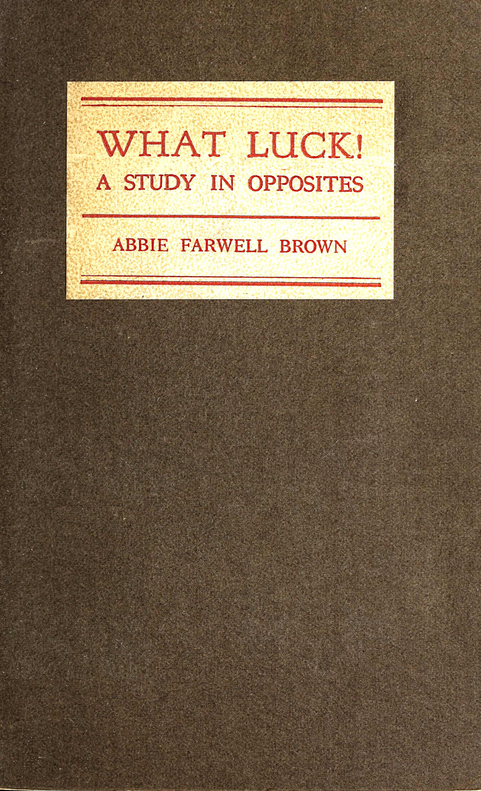
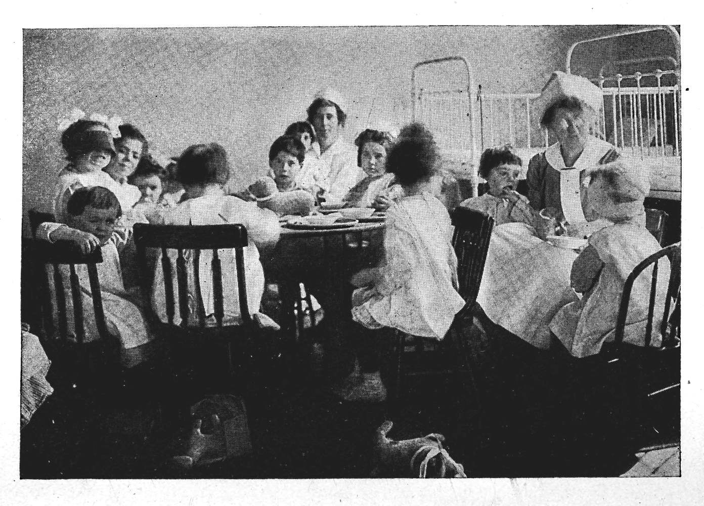

WHAT LUCK!
A STUDY IN OPPOSITES
BY
ABBIE FARWELL BROWN
MASSACHUSETTS CHARITABLE EYE AND
EAR INFIRMARY
BOSTON
Issued for private distribution only by
the Massachusetts Charitable Eye
and Ear Infirmary and presented to
their friends with their compliments
1827-1920
Side by side on the crowded waiting bench of the Infirmary sat two women, each with a child at her elbow, who had been eyeing one another furtively. They were silently criticizing in different languages.
“Her mourning must have cost much money!” thought Mrs. Rogazrovitch, enviously, looking down at her own painful saffron coat.
“Cielo! What a terrible hat!” mused the other woman, considering the purple velvet creation that crowned the frowzy locks of her neighbor. “She can have no care to hold the love of her husband!” And she wiped a tear with her black-bordered handkerchief.
The eyes of little Stephanie, who stood at the knee of Mrs. Rogazrovitch, were red and swollen; but not with weeping. Even the subdued light of the waiting-room made her squint horribly, and she kept her eyes turned from the window. This brought in direct line her neighbor, the pale, emaciated little boy at the other woman’s side. Stephanie was five; the boy seemed older. He hung his head and never looked up. Stephanie was ready to make friends, for she had grown tired of the long wait, but Paolo’s mother was in the way. She was continually bending over the boy, smoothing his hair or kissing his forehead, in what seemed to Stephanie a very silly fashion. Stephanie’s mother never kissed her at all.
Gradually Stephanie edged nearer. “Hello!” she said in a stage whisper suited to the solemn occasion. “Is your eyes sick, too?”
The boy stared, gave a blinking glance from big, brown eyes, and nodded.
“They look red, like mine,—only worse,” commented Stephanie, after this revealing look. “But they will fix them all right, if we’re lucky. The lady said so.” Again the boy glanced at her pitifully, but said nothing.
“Do you go to Kindergarten?” asked Stephanie. The boy shook his head. “I don’t go nowhere,” he said.
“I guess you are too big for Kindergarten. Oh, it’s the grandest place!” went on Stephanie ecstatically. “But I had to stop when my eyes got sick.—What makes your mother wear those black clothes? I hate black clothes.”
“My father died,” said Paolo solemnly.
“My father ran off,” volunteered Stephanie. “I think he went to be a soldier. Mrs. Raftery says it was because—”
“Stephanie! You shut up!” Mrs. Rogazrovitch jerked her by the arm. The attendant was saying something.
“Eighty-six!” he repeated. It was the number on the red ticket that Mrs. Rogazrovitch clutched in not over-clean fingers.
“Come on, you Stephanie!” snapped the mother. And the slatternly woman with the curly-haired child stepped forward to the table.
Yes; there was no doubt about it. Stephanie was a case of that tubercular eye trouble which affects so many children of the poor; a trouble caused by constitutional weakness, lack of care and of wholesome food. Unless properly treated Stephanie would become partially or wholly blind some day. And the pretty blue eyes would never play their part in a world where all the eyes are needed. But Stephanie was in one respect luckier than Paolo, who still waited, encircled by his affectionate mother’s arm. Strange negative “luck” that consisted in not being too-much loved by any one!
“You’d better leave her here,” said the Doctor, after he had examined the poor little eyes.
The woman blinked. “How long must she to stay?” she asked cautiously.
“Well, maybe three weeks; it’s an average case, I should say. We’ll take the best care of her,” he added kindly. But Mrs. Rogazrovitch was not worrying as he surmised.
“I don’ care. But will she grow well forever?” she asked. “She not be blind, eh?”
“She can be cured if you keep up the treatment as we tell you, after she goes home. You must bring her back for examination; give her milk and wholesome food, well cooked,—no doughnuts and candy; and,”—the doctor referred to Stephanie’s card,—“clean up your house and keep it in better condition. We shall keep an eye on Stephanie. And if you can’t do all this, we must find a better home for her.”
The woman looked sulky. “How much it costs to keep in the Hospital?” she asked. She was told that the usual charge was seventeen dollars and a half for a week, but that if she could not afford so much, the Superintendent would probably arrange to let her pay what she could.
“I can’t to pay anything for sick child!” exclaimed the woman. “I can just to pay rent and get some food. Two years ago my man goes off. I don’ know. Maybe he’s fighting; but I don’ get nothing.”
“That’s all right,” said the Doctor. “You go see the Superintendent. We’ll look after Stephanie anyway.—By the way, will you sign this paper giving us permission to fix her adenoids and tonsils while she is here? I daresay you don’t care?”
“No; I don’ care,” said the woman casually, with the air of one conferring a favor.
Of course she did not realize how great a privilege Stephanie was getting. Few citizens know that the Massachusetts Eye and Ear Infirmary is the only Hospital in the city where a child with a trouble like Stephanie’s would be so taken in and cared for. All such cases are referred to the Infirmary. How should Mrs. Rogazrovitch guess that the kind hands which were to care for the child and the kind faces surrounding her belonged to the best specialists and the best nurses anywhere to be found? She only knew that for the time being a burden was lifted. And this was Stephanie’s advantage over Paolo, whose mother loved him too fatuously to give him his only chance.
“Eighty-seven!” called the attendant, after Stephanie and her mother had passed on. It was Paolo’s turn.
“She says,—she could not spare me; she loves me too much. And besides, my father would not let her,” the boy answered a question in a hollow voice. “He was very sick, and last week he died. He would not let me be in a Hospital.” Helplessly he raised to the doctor eyes which should have been very beautiful; the eyes of a poet or painter.
“But why then did not your mother bring you back for treatment, as I told her?” asked the doctor again. The woman began to weep. “She says she could not leave my father,” interpreted the boy. “She loved him very much. Once she did try to come here with me, after the Visitor called. But she could not find the way. She says her head is sick. And she lost her ring. That made her very sad indeed.”
“Did she give you the medicine regularly?”
The boy hesitated. “Sometimes,” he said; “when the Visitor came. I think my mother forgot; she was so sad about my father. She sat in a chair and rocked all day. She is very kind and loving. She held me on her lap and cried, and cried.”
The Doctor frowned. “Is there any one here who can speak Italian?” he called out to the waiting crowd. A man stepped forward, while the Doctor sent Paolo aside. “Tell her, please, that unless she brings Paolo here regularly, and gives him the medicine every day, I will not answer for the consequences.—Do you see that boy over there?” The Doctor indicated a tiny fellow with fine Greek features, whose mother was crying over him in the corner. “Well; that woman would not leave him in our care, because she was too obstinate. And although she lives close by, she would not take the time and trouble to bring him in for treatment. So now he will lose the sight of one eye at least. Tell Mrs. Valentino that Paolo’s eyes are very bad, and he will fare worse than that boy, unless she does as I say.”
The woman burst into hysterical grief, and clasped Paolo passionately, mumbling endearing syllables in her musical tongue. The boy’s brown eyes filled too, and he tried to comfort her. Pitying herself for her many troubles, the mother led Paolo away.
“She will not come back,” thought the Doctor. “I see it in her face. The Social Service Department will have to get busy.”
The Social Service Department of the Infirmary did get busy, as in all such cases. When Paolo did not reappear, they went to look him up. The Visitor coaxed and re-urged the dazed, inefficient mother. But it was hopeless. Finally the case was reported to the proper authorities. But already Paolo’s mother had loved him to death. Stephanie was not to see her little neighbor again.
Meanwhile, for Stephanie herself there had begun what was—apart from a little discomfort at the beginning—the happiest three weeks she had ever known. To begin with, her poor ragged clothes were taken away, and she had a lovely warm bath in a tub; in itself a novel experience. With her yellow curls nicely brushed, sweet and clean from top to toe, she was then tucked away in a little white cot all by herself,—this also was an unheard-of luxury!—in a sunny, airy room where other clean children were playing about like a happy family. At first poor little Stephanie was too miserable to do more than snuggle into the soft, sweet pillow, and allow herself sulkily to be fed with easily swallowed things. A kind Voice, associated with strong and gentle hands, attended to her wants. But Stephanie slept most of the time; dreaming of happy faces, merry laughter, and feet running about a Kindergarten.
After two days of existing as a mere little mollusc, one morning Stephanie sat up and began to take notice. A beautiful white-clad Being put her into a neat cotton frock and pinafore. Only Stephanie’s scarred shoes were left to remind her of the home that seemed mercifully far away. They tied a shade over her eyes, to help the squint, and for the first time she looked around with interest at the nursery.
What a pleasant place it was! Stephanie had never seen anything nearly so beautiful; except the Kindergarten. Poor little Stephanie! It had been hard luck to give up the Kindergarten, just when she was growing so happy there. The school nurse had seen that she must stop. But—there was a rose on the table here, too! A red rose! And children playing games, just like a real kindergarten! But these children were not all of Stephanie’s age. Some were bigger; some much littler. Why, in the very next cot to her lay a wee baby, sucking a bottle. Nurse said its mother was sick in another room. Stephanie thought this baby would be nicer than a doll to play with. And oh, oh! Over there was a little black live doll, with eyes that rolled and blinked, and real hair standing up all over her head; and a big red bow! Stephanie grinned at the doll; and oh, oh! The doll grinned back! Stephanie waved her arms up and down. And the funny doll stretched her mouth in white-toothed glee, and did just what Stephanie did. This was better even than Kindergarten!
What else was there in the lovely room? Stephanie looked around. There were nine little beds against the walls, and as many more in the next ward, as she soon learned when she began to investigate. Most of the beds were empty in the daytime. Across the room from Stephanie a big boy sat up among pillows, reading. He laughed when Nurse told him a funny story, but could only whisper in reply, holding on to his throat. Stephanie understood perfectly, and was very sorry for poor Tom. She was sorrier still when dinner-time came; when she and the other dressed children gathered about little low tables, with bibs on. Soup was all that poor Tom could swallow. But Stephanie could eat fish, and potato; and there was a nice pudding, too! Poor Tom! Stephanie ate ravenously, after her two days’ fast. No puddings ever happened in the home she had left.
The twenty little children were too busy eating to talk. “More bread and butter? More milk? Yes, indeed. All you want.” Just think; Stephanie could have all the milk she wanted! That had never happened before in her life. She thought she must be in Heaven. The children were of all shades and manners,—perhaps that was like Heaven, too; who knows? Most of them wore curious foreign names, but they all spoke English, after a fashion. Some of them were just learning the ways of good Americans at the table and elsewhere. Frank, who sat next Stephanie, was a little pig. He made faces, spilled his milk and scattered his crumbs, so that She,—the Angel in white,—scolded him, and made him sit by himself at another table, till he should be more careful.
But Stephanie liked John, with the big grey eyes, who was a little gentleman; though he wore such a funny thing like a bonnet on his head,—and he a big boy of eight! Stephanie loved at first sight Dottie Dimple with the pink cheeks and one lovely blue eye. She cried when John explained that one day Dottie had poked a pair of scissors into the other eye, so that it would never see any more.
Then there was Sammy, with the funny face and big nose, who looked like a little old man in a baby’s dress. Sammy could not hear when you spoke to him.—But mostly the children forgot all about eyes and ears between dressing-times, they had so much to make them happy.
After dinner the children put back their chairs nicely, and then the victrola played lovely music. It was pleasant to see all the little children stand at salute when they heard the Star-Spangled Banner. Even the deaf ones did as they saw the others do.
On sunny days they played out on the balcony of the ward below. It was a pity that they had no balcony of their own, leading from the nursery. Greatly it is needed. But it will come, no doubt, with a great many other needed things, when more people know about the Infirmary on Charles Street, and the good luck it brings to little children and big; when more parents, reading the story of Paolo, Stephanie, and these others, will understand that what helps such children protects the health of the whole community, including their own little ones.
The ounce of prevention has gone up in the scale of modern values. It is worth not pounds but tons of possible cure. Every child kept out of an asylum is a civic asset. Every penny spent in the prevention of blindness or deafness is an investment placed on interest a thousandfold.
Those were wonderful days for babies like Stephanie who had seen too little luck in their lives. Breakfast at half past six; a luncheon of fruit and milk at nine; dinner at eleven, and supper at four. All the bread and butter a child could eat; all the milk she wished to drink. And most of the children drank a quart of milk every day. No wonder Stephanie began to be less pale and thin before the nurse’s eyes. No wonder her eyes began to be better almost directly. Soon she was running and racing about the nursery among the liveliest of them all.
One day a visitor came to talk for a minute with the nurse. She had been to the clinic, and after that they had given her this extra privilege. To Stephanie this Person seemed a beautiful grown-up lady. But Mamie was really only a nice girl of sixteen, with happy, sunburned face and shining brown eyes. Stephanie squirmed with delight when Mamie took her up on her lap while she talked with Nurse.
“She has eyes like mine were,” said Mamie in an aside to the nurse. But Stephanie heard, and hoped. Would her grey-blue eyes ever get big and brown like this nice Person’s, she wondered?
“Oh, sure! I’m all right now,” said the visitor, in answer to a question. “They pronounced me O. K. Just look how fat and brown I am. Say, it don’t seem possible. Why, I was sicker than Stephanie here when I came, wasn’t I?” The nurse assented. “I’ll never forget how I felt, working in the store: my eyes all swollen and weepy. I was down and out, all right. For, of course, I haven’t a relation on God’s earth. And with my salary,—how could I go to a specialist? Then a lady gave me a hunch about this Infirmary. So here I came; and everybody was mighty good to me. You know, don’t you, Dearie?” She caught Stephanie up close.
“Yes!” affirmed Stephanie, snuggling.
“I came here all in,” Mamie went on. “But what a difference when I left! Just to think of going to the country for a rest, instead of right back to the store. And nothing to pay for it all, either. Some dream!”
“Did you have a good time in the country?” asked the nurse sympathetically.
“I’ll say so!” cried Mamie. “I just lived out doors four solid weeks, sitting on the piazza or walking in the garden, like a lady. They made me lie down to rest after dinner. Rest! Well; the chief thing I had to do to tire me was eat! And such eats! Um! Eggs and milk between meals, too. Say, the girls at the store will sure think I’m kidding when I tell them about it.”
“You’ll be sure to come back here, as the Doctor said?” charged the nurse. “You know, you will have to be careful still.”
“You bet I’ll be careful!” said Mamie earnestly. “I am not going to take any chances. The Doctor made it plain enough what I’ve got to do. I’ll keep my eyes, thanks, now I’ve got ’em back.”
The trouble that Stephanie and Paolo and Mamie had cannot certainly be cured, once for all. It is likely to recur, if care is relaxed; and each time it makes a worse scar on the eye, with increased handicaps. The hardest part of the follow-up work of the Infirmary is to make the parents understand this, and to watch patiently.
Three weeks in a country home, at a cost of five dollars a week, following three weeks’ treatment at the Eye and Ear Infirmary, had stood between Mamie and blindness. The Infirmary has an emergency fund, all too inadequate, for such cases.
“What is the Country?” asked Stephanie, when Mamie had gone. “Is it My Country-Tiz?” She had an idea that it might have something to do with a relative of the Star Spangled Banner. “Shall I have to salute it?”
“Bless you!” cried the nurse. “I guess you will want to salute it, when you see it for the first time!”
On the last Sunday of her stay Stephanie had a surprise. The Doctor had pronounced her eyes so much better that she could leave the following week. Plump, and rosy, and bright-eyed, Stephanie was as pretty a little girl as one could wish to see. To be sure there was a fly in her ointment. The Doctor had not succeeded in turning her eyes into big brown ones like Mamie’s, as Stephanie had suggested. But nurse assured her that blue eyes would probably wear better in the long run.
Stephanie was playing peacefully by herself, while the other children visited with their parents, during the one hour allowed for this every Sunday.
“Here’s a visitor to see you, Stephanie,” said the nurse. And in walked Mrs. Rogazrovitch, saffron coat, purple hat, and all. She was a little cleaner than usual; there was more black upon her boots than upon her hands. But she was still a striking contrast to Hospital standards. Stephanie greeted her without enthusiasm. Indeed, when she spied the familiar face, she shrank back to the skirts of Nurse, with a little gasp that told more than words. The mother flushed. Other mothers were watching.
“Well, Stephanie!” she cried in astonishment mingled with pride. “You do look good! Ain’t ye glad to see me, eh?” Still Stephanie held back. “Your eyes get well, Stephanie? You’ll be coming home soon, yes?” But Stephanie pouted and kicked the floor with her toe. Mrs. Rogazrovitch turned to the nurse. The latter shook her head dubiously.
“Have you fixed up your house as the Doctor said? You know she will have to be kept clean, and sleep in an airy room. And you’ll have to feed her right and bring her here often for examination.”
The mother twisted uneasily. “I’ll fix the house up yet,” she promised. “I ain’t had time, but I will.” Two weeks alone in the childless tenement had put a new value on Stephanie. And the pretty, bright-eyed child seemed no longer a mere burden. “I’ll come back for you next week,” she finished, touching Stephanie’s curls with the first real tenderness she had ever shown. “Good bye, Stephanie.”
But at the end of her three weeks Stephanie did not go home, though her eyes no longer needed Hospital care. When Mrs. Rogazrovitch appeared, ready to reclaim her child, she was staggered with the counter-suggestion that Stephanie should go to the sea-shore for a month.
“Stephanie needs a vacation,” was the report. “You must not deprive her of the chance. It may keep her from having a relapse. Every relapse is dangerous. And the month will give you time to fix up your house and get it ready for such a nice little girl to live in.”
The desired result came not without argument. For now Mrs. Rogazrovitch was set upon having her pretty child back again. But luckily she was not deaf to reason, as Mrs. Valentino had been. And the assurance that Stephanie would receive four weeks’ board in the country free had some weight in the matter. Reluctantly she consented that Stephanie should go. So the very week that ushered poor little Paolo into a still further country, from which there is no return, saw Stephanie saluting the wonders of green fields, flowers, and ocean shore.
Her mother returned with a slow step to the empty tenement. Mrs. Raftery, next door, was consumed with curiosity, when with her head out of window she spied the saffron coat and purple hat entering dejectedly the door below, unaccompanied.
“Why, where’s Stephanie?” she cried. “I thought you was afther goin’ to fetch home the child.”
The purple hat rose to the occasion with a jerk. “Stephanie is going for a vacation to the sea-shore,” said Mrs. Rogazrovitch with dignity.
“Glory be!” ejaculated Mrs. Raftery, pulling in her head and sinking into a chair. The news, swiftly imparted, raised considerably the standing of Mrs. Rogazrovitch in that neighborhood.
Presently Stephanie’s luck began to take another turn for the better; for as soon as she was well out of reach on the Island, Stephanie’s mother began to repent that she had let her go so easily. Others might covet the now precious possession. She began to suspect a conspiracy to keep Stephanie permanently exiled. There had been conditions set upon her return. For the first time Mrs. Rogazrovitch began to consider seriously the instructions she had received about hygiene and sanitation.
One morning the neighbors were surprised by an unwonted activity in the fourth floor back. Clouds of dust, followed by the smell of soap, issued from the long unopened windows. Dingy articles were banged viciously and hung out to imbibe the unaccustomed sun. That week was a perpetual wash-day. Mrs. Raftery had her theory. At last she could stand the suspense no longer, but put her theory squarely to the test, with a question.
“I’m making ready for Stephanie’s home-coming,” answered Mrs. Rogazrovitch tartly. “What do you suppose, anyhow?”
“Blessed Saints!” ejaculated Mrs. Raftery. “I thought you was goin’ to take one lodger at least, the way you’re makin’ everything so grand an’ tidy. La sakes! An’ it’s only for Stephanie!”
But it was her neighbor’s next remark that smote Mrs. Raftery nearly dumb. It was made with some hesitation. “Will you—tell me—about making—soup?—I want to learn to cook.”
When she could recover Mrs. Raftery gasped, “Cookin’, is it? Hivenly powers! Why, I’ll show ye meself. I’ve been a cook all my life, till this lameness took me. And sure, there’s a diet kitchen around the corner, I’m told, where they’ll give ye points.”
It was this repeated conversation that made the neighborhood hysterical. Mrs. Rogazrovitch cleaning house! Mrs. Rogazrovitch learning to cook!
“It’s a changed craytur she is entirely!” exclaimed Mrs. Raftery, to her gossip. “An’ it’s a changed home into which Stephanie will be comin’ from her vacation at the sea-shore. It’s small blame to her man that he ran away from that home two years ago, I’m thinkin’. But the woman will have no trouble at all gettin’ a lodger these days, the way her rooms be lookin’ so nice and dacint. Say, she’s been afther tellin’ me that my childher ought to have more fresh air o’ nights! And doughnuts, she says, is not healthy for infants. The knowingness of her! Sure, they’ll soon be afther makin’ Mrs. Rogazrovitch the Prisidint of the Improvemint Society, the way she’s gettin’ intelligint an’ forthcomin’. An’ she with a child visitin’ at the sea-shore!”
So when Corporal Rogazrovitch, newly discharged, returned to take a secret reconnaissance of the home which he had deserted for the sake of his Country,—and for his own peace of mind,—he heard and saw such changes as made him decide not to re-enlist. This was another bit of luck for Stephanie; if you look at it from the right angle.
And then,—there was the Kindergarten, too, for to-morrow!
There was to be no anti-climax after all in Stephanie’s home-coming.